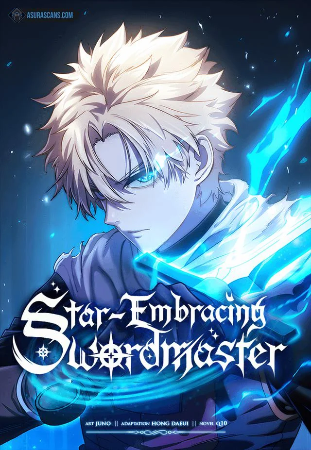
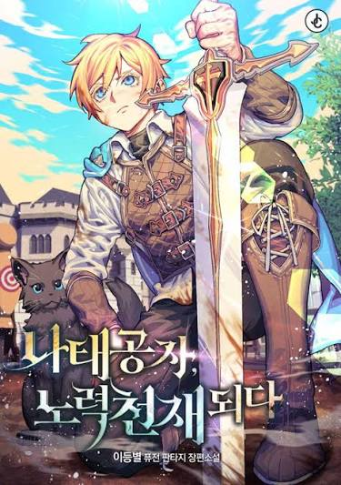
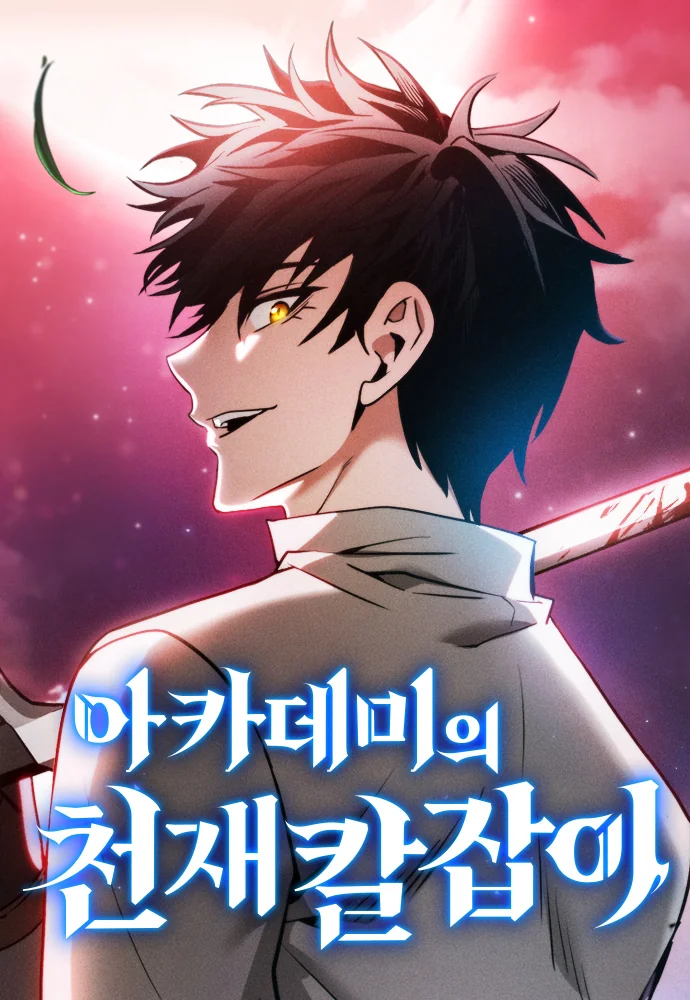

🥇 Star-Embracing Swordmaster
Tags: Fantasy, Action, Swordsmanship
Chapter Count: 145 (Ongoing)
Author(s): Hong Daeui, Q10
Artist(s): Juno
Star-Embracing Swordmaster (Korean: 별을 품은 소드마스터) is a Korean fantasy manhwa adapted from the web novel of the same name. The original novel was written by Q10 and was completed after its serialization. The manhwa adaptation is written by Hong Dae-ui with artwork by Juno, and is published on Naver Webtoon. The manhwa began serialization in 2023 and is currently ongoing. Vlad was a vagrant child of the slums who always admired knights. After an incident where he was struck by black lightning, he began hearing a voice. A knight of blue moonlight appeared one day, and Vlad’s back-alley life was turned upside down… Even an obscure star that does not shine in the highest peaks of the night sky is still a star if it wishes to shine.
Read at:
WEBTOON
MANGADEX
RATINGS
Story: ⭐⭐⭐⭐⭐
Art: ⭐⭐⭐⭐⭐
Pacing: ⭐⭐⭐⭐
Characters: ⭐⭐⭐⭐⭐
World-Building: ⭐⭐⭐⭐
TOTAL: ⭐⭐⭐⭐⭐

🥈 Reformation of the Deadbeat Noble
Tags: Fantasy, Swordmanship, Magic Academy
Chapter Count: 166 (Ongoing)
Author(s): Second Star
Artist(s): Dodomoon
After witnessing the shocking death of his mother, young Airen Farreira uses sleep to escape his painful reality, earning him the nickname, “the lazy lord”. Yet, in spite of others’ jeers and whispers, Airen has no intention of changing his ways. But when he awakens one day from a dream about a mysterious swordsman, his life’s trajectory takes a complete turn...
Read at:
WEBTOON
MANGADEX
RATINGS
Story: ⭐⭐⭐⭐⭐
Art: ⭐⭐⭐⭐
Pacing: ⭐⭐⭐⭐
Characters: ⭐⭐⭐⭐
World-Building: ⭐⭐⭐⭐⭐
TOTAL: ⭐⭐⭐⭐⭐

🥉 Academy's Genius Swordmaster
Tags: Fantasy, Swordsmanship, Regression, Magic Academy
Chapter Count: 161 (Ongoing)
Author(s): C.H.
Artist(s): Bluepic
Following a momentous battle against giants for the fate of the world, Ronan emerges victorious as the last man standing of the imperial army. As he laments this hollow victory with his dying commander, Grand Marshal Adeshan, they quickly learn that the war is far from over and an overwhelming force of giants descends from the heavens. Fearing the worst, yet seeing hope in the courageous Ronan, Adeshan uses her last time slip to send him back to the past, so that he can enroll in the prestigious Phileon Academy and become the strongest swordsman the empire has ever seen!
Read at:
WEBTOON
MANGADEX
RATINGS
Story: ⭐⭐⭐⭐⭐
Art: ⭐⭐⭐⭐⭐
Pacing: ⭐⭐⭐⭐
Characters: ⭐⭐⭐⭐
World-Building: ⭐⭐⭐⭐
TOTAL: ⭐⭐⭐⭐⭐